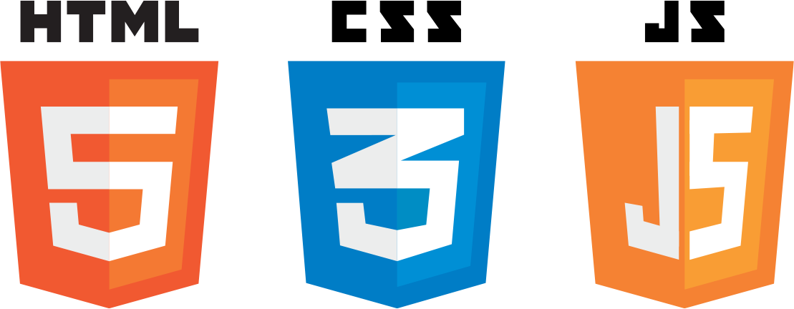

<!DOCTYPE html>
<html lang="en">

<head>
  <meta charset="utf-8">
  <meta name="viewport" content="width=device-width, initial-scale=1, maximum-scale=1">
  <title>Venture</title>
  <link rel="stylesheet" href="framework/css/slideshow.css" data-noprefix>
  <link rel="stylesheet" href="framework/css/highlightjs/github.css" data-noprefix>
  <link rel="stylesheet" href="framework/css/styles.css" data-noprefix>
  <link rel="shortcut icon" href="framework/img/favicon.jpg">

  <!-- Takes care of CSS3 prefixes -->
  <script src="framework/scripts/prefixfree.min.js"></script>

  <!-- opens all links in a new window -->
  <base target="_blank">
</head>

<!-- Timer/progress bar: Define the presentation duration using "data-duration" in minutes. -->

<body class="en" data-duration="360">
  <main>
    <section class="slide intro">
      <h1 class="heading-bg"> </h1>
      <footer>
        <p class="right">Use the left
          <span class="arrow">&#8592;</span> and right
          <span class="arrow">&#8594;</span> arrow keys to navigate</p>
      </footer>
    </section>

    <section class="slide" data-markdown>
      <script type="text/template">
        #Why Venture?
        * Aly to add the quote here
                <!-- //here's a way to add images -->
        
      </script>
    </section>

    <section class="slide" data-markdown>
      <script type="text/template">
        #The formula
  </script>
    </section>

    <section class="slide" data-markdown>
      <script type="text/template">
        #The Solution
      </script>
    </section>

    <section class="slide side-by-side" data-markdown>
      <script type="text/template">
        #Tech Stack
                              
        
      </script>
    </section>


    <section class="slide side-by-side" data-markdown>
      <script type="text/template">
        #Tech Stack
        * JavaScript/HTML5/CSS3
        * reactJS      
        * express/nodeJS   
        * Maps JavaScript API / Routes Directions API / Places Origin API
        * weather API

        ---
        ###Scalability and optimization
        * applicable to other cities
        * react strap / snazzy maps theme
        * optimized for mobile

      </script>
    </section>


    <section class="slide" data-markdown>
      <script type="text/template">
        #The vision: Awakening wonder
        * Keeping it simple, yet approachable
        * Basic directions, straightforward questions
        * And a prod to nudge your sense of adventure
      </script>
    </section>

    <section class="slide" data-markdown>
      <script type="text/template">
        # Polishing touch

        Choice simplicity

        Opens Possibility

        To a whole new world...
        
        
        
      </script>
    </section>

    <!-- Last slide -->

    <section class="slide side-by-side" data-markdown>
      <script type="text/template">
      <h1>Thank you!</h1>
        
        * Jacques && Simon && Jordan for their infinite patience and support
        * Kevin && decodeMtl team for creating amazing learning opportunities
        * WeWork for the space && Monday morning breakfast
        * all of <strong>YOU</strong> for coming today!

      
      <p class="attribution">Slide presentation created by the Salty Hashers</a> based on
        <a href="https://github.com/LeaVerou/csss">Lea Verou's SlideShow</a> and
        <a href="http://lab.hakim.se/reveal-js/">reveal.js</a>.</p>
      </script>
    </section>

  </main>
  <!-- cls main section -->

  <script src="framework/scripts/jquery-1.11.0.min.js"></script>
  <script src="framework/scripts/slideshow.js"></script>

  <!-- Uncomment the plugins you need -->
  <script src="framework/scripts/plugins/css-edit.js"></script>
  <script src="framework/scripts/plugins/css-snippets.js"></script>
  <script src="framework/scripts/plugins/css-controls.js"></script>
  <!-- <script src="plugins/code-highlight.js"></script>-->

  <script src="framework/scripts/plugins/markdown/marked.js"></script>
  <script src="framework/scripts/plugins/markdown/markdown.js"></script>
  <script src="framework/scripts/plugins/highlight/highlight-8.4.min.js"></script>
  <script>hljs.initHighlightingOnLoad();</script>
  <script src="framework/scripts/llc.js"></script>
  <script>
    var slideshow = new SlideShow();

    // Grabs all the .snippet elements
    var snippets = document.querySelectorAll('.snippet');
    for (var i = 0; i < snippets.length; i++) {
      new CSSSnippet(snippets[i]);
    }
  </script>
</body>

</html>